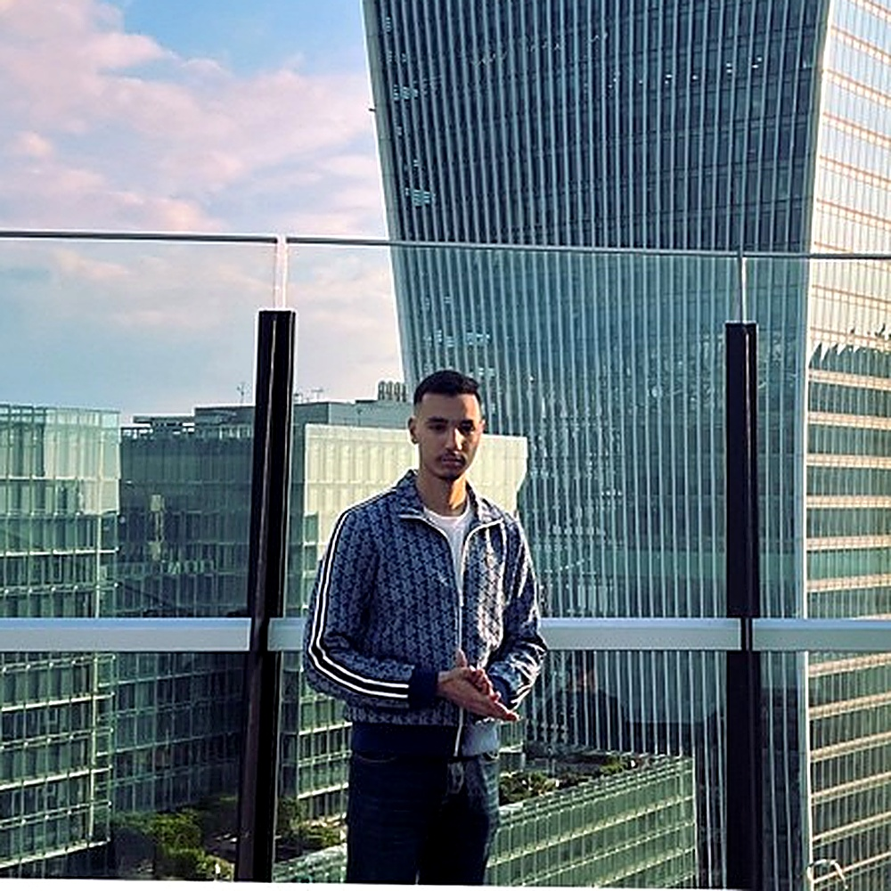
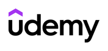

I am a cybersecurity graduate and practising security engineer with hands-on experience in information security governance, regulatory compliance (ISO 27001, GDPR), AI risk assessment, and the protection of critical financial infrastructure. My final year research examined next-generation VPN protocols and post-quantum cryptography readiness — an emerging-technology security question with direct relevance to national and organisational digital resilience planning.

My background combines information security governance with regulatory compliance experience (ISO 27001, GDPR) and hands-on AI risk assessment. Currently working as a Graduate Engineer at LMAX Group, I help protect critical financial infrastructure — skills directly transferable to the analysis of security, intelligence and strategic risk that IMSISS focuses on.
BSc (Hons) Computer Science (Cyber Security and Networks), First Class (4.06 CGPA)
Math and Economics – 87%
Automated compliance monitoring tool using Graph API and Python to streamline ISO 27001 audits and enforce security policies across Active Directory.
Final year project benchmarking WireGuard and OpenVPN on security, performance, and latency, and assessing post-quantum cryptography readiness — an emerging-technology security question of direct relevance to critical infrastructure and digital resilience planning.
Framework for assessing bias and data leakage risks in internal Machine Learning models.
Reviewing my application for IMSISS, or have a question about my profile? Send a message directly — I read every one and reply from matiouimouad9@gmail.com.

Fill in later UdemyIn the spirit of transparency, I believe in acknowledging the tools and inspirations behind this platform.
This portfolio's colour palette and layout language are inspired by the official IMSISS (International Master in Security, Intelligence & Strategic Studies) website — a deep navy-to-cyan gradient identity on a light institutional background. Colours and structure are adapted and reinterpreted, not copied; no IMSISS logo, imagery or text is reproduced here.
While the content, academic achievements, and code logic within my projects are strictly my own, I leveraged Generative AI to help build the CSS architecture and frontend responsiveness of this website.